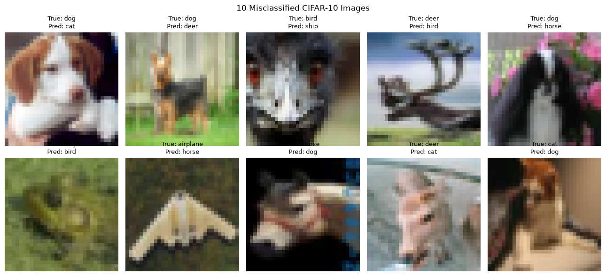
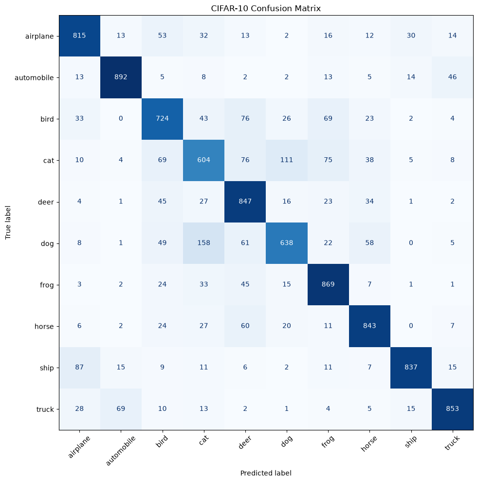

A COMPUTER VISION STUDY / CIFAR-10
Teaching a small model
to see the world.
Ten everyday object classes. Tiny 32 × 32 images. A set of experiments exploring how convolution, augmentation, and transfer learning change the way a model learns.
INPUT / 32 × 32 RGB
MODEL OUTPUT10 classes
FROM PIXELS → TO PREDICTION
MODEL
STUDY
CIFAR-10
STUDY
CIFAR-10
50kTRAINING IMAGES
10OBJECT CLASSES
6MODEL VARIANTS
81.71%BEST REPORTED TEST ACCURACY
01 / THE QUESTION
Can a compact CNN
recognize everyday objects?
This project studies image classification on CIFAR-10, a benchmark of small color images spanning ten familiar categories. The notebook builds and evaluates six approaches, from a LeNet-5 baseline to a scratch-built CNN with data augmentation and an ImageNet-pretrained MobileNetV2.
The central comparison: how far can a carefully trained compact convolutional network go, and does augmentation help it generalize?
Task10-class image classification
Input32 × 32 RGB pixels
Best row in notebook comparisonScratch CNN + ImageDataGenerator
FrameworksTensorFlow · Keras · scikit-learn
PythonTensorFlowKerasNumPyPandasMatplotlibscikit-learnSciPy
02 / THE DATA
A familiar world,
in 32 pixels.
CIFAR-10 from tf.keras.datasets — 60,000 color images across ten mutually exclusive classes.
CLASS DISTRIBUTION
One dataset. Ten categories.
DATA FLOW
50,000 train10,000 test
For scratch CNN and transfer-learning runs that used validation_split=0.1, 10% of the training array was held out for validation. The ImageDataGenerator run instead used the test array as validation; see the evaluation caveat below.

03 / THE METHOD
From raw pixels
to learned features.
Prepare the image
- 01Keep RGB pixels at 32 × 32 for CIFAR-10 CNNs.
- 02Convert image arrays to float32 and divide by 255; observed range: 0–1.
- 03One-hot encode labels to 10 output values.
- 04Resize to 96 × 96 only for MobileNetV2.
LABEL SHAPE (50,000, 10)TEST LABELS (10,000, 10)
Vary the transformations
- 01ImageDataGenerator: rotate up to 15°, shift width/height by 10%.
- 02Horizontal flips and zoom up to 10%; nearest fill.
- 03Keras layers: flip, rotate, zoom, and translate by 10%.
- 04Augmentation is used during training, not user-image prediction.
RANDOM TRANSFORMS 5 TYPESPIXEL RANGE 0 → 1
04 / THE ARCHITECTURES
Six paths to
a prediction.
The winning scratch architecture is deliberately modest: 175,018 parameters, with learned filters followed by global pooling and a 10-way softmax.
SELECTED MODEL · CNN SCRATCH + AUGMENTATION
175,018 parametersCustom_CNN
INPUT32×32×3
→CONV × 232 filters
→MAX POOL16×16
→CONV × 264 filters
→MAX POOL8×8
→CONV128 filters
→GLOBAL AVG128 values
→DENSE256 → 10
All convolutions use 3 × 3 kernels, ReLU activations, and same padding. The final Dense layer uses softmax. Parameter count and layer sequence are from the notebook's Custom_CNN summary.
LeNet-5
Two tanh convolution stages, average pooling, and dense layers.
62,006parameters
MobileNetV2
ImageNet weights, resized inputs at 96 × 96, global average pooling, and a 128-unit head.
2,423,242parameters · 165,258 trainable when frozen
Residual block
Two 3 × 3 convolutions plus a 1 × 1 shortcut projection and addition.
78,016parameters · standalone demo
05 / THE TRAINING
Give learning room.
Stop when it stalls.
The custom CNN used Adam with categorical cross-entropy, batch size 64, and up to 100 epochs. Early stopping monitored validation loss (patience 10, restoring best weights); a plateau scheduler halved the learning rate after five stagnant epochs.
Training stopped at epoch 27 and restored the weights from epoch 17. The notebook reports a 26.65-minute training run. The augmented CNN used the same optimizer and callbacks, with online image transformations.
OPTIMIZERAdam · 0.001
LOSSCategorical cross-entropy
BATCH64 (scratch CNN)
STOPPED27 / 100 epochs
RESTORED CHECKPOINT17th
Best epoch by validation loss for the scratch CNN run, restored after early stopping.
epoch 1best weights · 17stopped · 27
06 / THE EVIDENCE
Augmentation led
the comparison.
Reported test accuracy for every model in the notebook's comparison table. No metrics are added beyond its recorded results.
HIGHEST REPORTED TEST ACCURACY
81.71%
Custom CNN + ImageDataGenerator
175,018 parameters
+2.49 percentage points over the same CNN trained without augmentation (79.22%).
Difference calculated from the two reported notebook accuracies.MODEL COMPARISON
Accuracy on CIFAR-10 test set
Highest reportedOther notebook results
| Model | Approach | Parameters | Test accuracy |
|---|
SCRATCH CNN · NO AUGMENTATION
Per-class report
These precision, recall, and F1 values are the notebook's classification report for the non-augmented scratch CNN, not the selected augmented model.
| Class | Precision | Recall | F1 | Support |
|---|---|---|---|---|
| Macro avg | 0.79 | 0.79 | 0.79 | 10,000 |
| Weighted avg | 0.79 | 0.79 | 0.79 | 10,000 |
SCRATCH CNN · NO AUGMENTATION
Confusion matrix
Actual matrix generated by the notebook. Rows are true labels; columns are predicted labels.

Most frequent directed confusionsdog → cat 158cat → dog 111ship → airplane 87
Evaluation note. In the notebook, the ImageDataGenerator run uses the 10,000-image test set as validation data and then evaluates on that same set. Treat 81.71% as the notebook-reported result, not an untouched final holdout estimate. The comparison table also reports MobileNetV2 feature extraction as 0.8100, while its earlier standalone evaluation prints 0.7995; the notebook reuses the fine-tuned model object in the later comparison. Both table values are preserved as printed.
07 / TRY THE MODEL
Bring an image.
Ask what it sees.
The included API loads the actual saved CNN+augmentation model. It resizes your image to 32 × 32 RGB, scales pixels to [0, 1], and returns its real softmax scores.
Checking prediction service…MODEL · CUSTOM_CNN
MODEL RESPONSEYour result
Your result
will appear here.
Upload an image to see the model's predicted class and per-class softmax scores.
CIFAR-10 was trained on small, centered objects. The model accepts other images, but results on unrelated image types may be unreliable. Softmax scores are model outputs, not calibrated probabilities.
08 / THE TAKEAWAY
A small network.
A measurable gain.
Within this experiment, online augmentation moved the custom CNN from 79.22% to the highest reported score, 81.71%. The model stays compact at 175,018 parameters.
THE NOTEBOOK'S TOP COMPARISON RESULTImageDataGenerator augmentation outperformed the same scratch CNN without augmentation by 2.49 percentage points in the reported test comparison.
The CIFAR-10 images are low resolution, and the test set was used for validation in the winning run. A separate validation set and fresh test evaluation would provide a stronger estimate.
Reserve validation data before model selection, report per-class metrics for the selected checkpoint, and evaluate robustness on additional data.
APPENDIX / NOTEBOOK OUTPUTS
Every figure.
Every recorded result.
All 12 embedded figures below are extracted directly from the executed notebook. Expand the text archive for the complete printed outputs, layer summaries, comparison table, evaluation report, warnings, and training logs.
SOURCE OUTPUT ARCHIVE
Notebook text outputs
These are the notebook's saved textual outputs, including full training logs. Figures are shown in the gallery above. Expand a cell to inspect its recorded output.
Loading saved notebook outputs…
A REPRODUCIBLE STUDY
Data in. Evidence out.
Built from the notebook's actual CIFAR-10 experiments, figures, model and reported metrics.